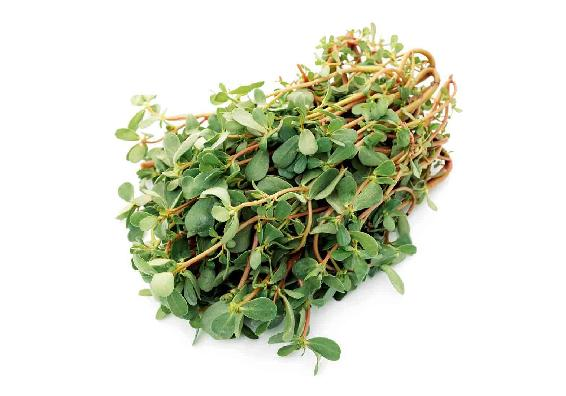
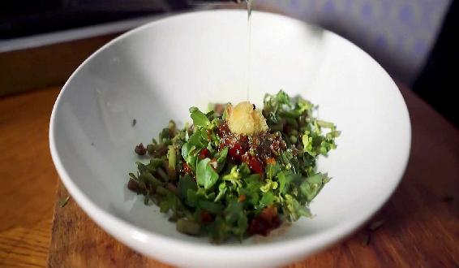
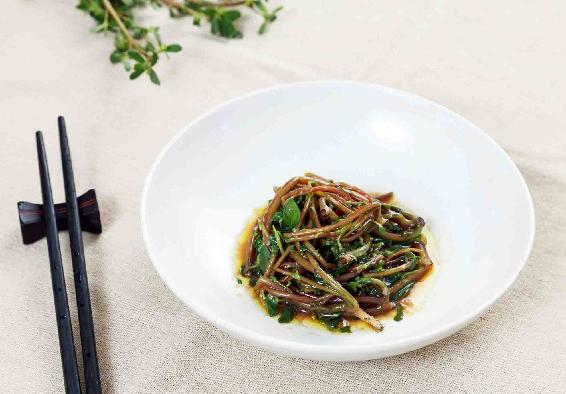
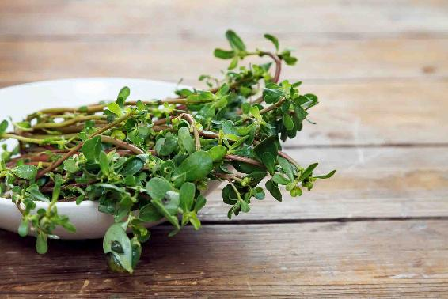
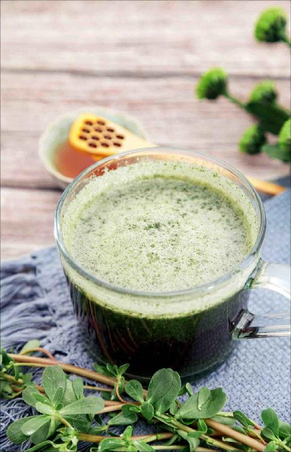

2017年6月24日，在四川省茂县发生了山体的高位垮塌，把下面的一个村庄整个都给掩埋了。而垮塌的山体把山下的河流堵塞了两千米，直接对成都的水源，乃至河道下游的水源安全都造成了威胁。环保部门随即启动了环保监测应急方案，来监测水质。
茂县位于长江的上游地区，出现这样的灾情，对于周边地区的水质还是有很大影响的。
古人说“大灾之后必有大疫”，意思就是说，在大的灾情之后，往往随之而来的就是传染病。因为地震、滑坡、塌方这样的地质灾害，会使土层翻动起来，而深埋在地底下的一些细菌、病毒，也会随之而出。同时，水源也容易受到污染，之后容易产生的流行病，也往往是肠道一类的传染病。
茂县在2008年的汶川大地震中，也是受灾很严重的地方，它距离汶川只有30千米。当时茂县在地震发生以后，有40多小时与外界不通音信，交通、水电、通信全部断绝，成为孤岛。历史上茂县这个地方是一个灾害很多发的地区，这次的山体垮塌是因为连日降雨，山体已经被泡酥了，所以才发生了垮塌。其实，在汶川大地震之后，四川很多地区的山体都变得酥软了，是很容易发生塌方的。
我建议朋友们，在雨季千万不要到一些山区去旅行。
有很多朋友，对于一年四季的天气变化不是那么注意，在雨季的时候贸然地跑去山区游玩，这就存在潜在的危险。
因此，关心四时天气的变化，不仅是为了指导我们的饮食，也是为了指导我们在生活的方方面面避险。
古人说：“知命者不立乎岩墙之下。”意思是说知道天命所在的人，是不会站在很危险的岩墙下面的。这个岩墙，其实不仅仅指实质上的墙，也指生活中的各种危险的信号，包括流行性传染病。
2008年汶川地震之后，我写了一篇文章，提醒灾区的人和前往灾区救援的人注意预防肠道传染病，因为古人讲“大灾之后必有大疫”。
而发生过地震的地方，水就变得不那么清洁了，很容易引起肠道传染病。当时我给灾区的朋友们推荐的预防方法是喝马齿苋糖水。这个方子对于急性肠炎、痢疾，以及各种急性肠道传染病都很有效果。
第一，小孩子容易患的手足口病。
第二，细菌性痢疾。比如，吃了不干净的海鲜、不干净的生冷瓜果，或者喝了不干净的水而拉肚子。
第三，肠道息肉。
第四，湿热便秘。这个跟之前讲过的细菌性痢疾和细菌性肠炎刚好相反，前者是拉肚子。但这两个都属于肠道病的热证，而马齿苋糖水这个方子，都能调理和预防。
第五，痔疮出血。这个同样也是属于肠道病的热证。
马齿苋是一种野菜，也是一味中药，它最大的功效，就是能调理大肠经的疾病，而且专门调理大肠经的热证。
马齿苋是调治大肠经热证的一个首选药，它既能解毒，又能消炎，还能祛热。对属于热证的肠道病，用马齿苋基本上是可以调治的。也就是说，在夏天用马齿苋不仅可以调理细菌性肠炎，还可以调理湿热型便秘，因此，夏天要经常吃一点儿马齿苋。
这个方子非常的简单，只需要准备新鲜的马齿苋。它是一种野菜，南北方都有，现在也有一些菜市场卖它，特别是在南方。
原料：马齿苋（新鲜），蒜泥、香油和盐。


做法：
把新鲜的马齿苋洗干净，然后下锅焯水两分钟，焯完之后把马齿苋捞出来过一下凉水，使其保持鲜绿的颜色，然后拌上蒜泥、香油和盐，做成凉菜。焯过的水不要倒掉，往里加一点点白糖或者蜂蜜喝下去。
允斌叮嘱：
1. 焯过马齿苋的水里，只能放白糖或者蜂蜜，而不能放红糖。因为白糖和蜂蜜都有清热、解毒的作用，而且马齿苋是酸味的，白糖是甜味的，把它们两个放在一起，就叫酸甘化阴。也就是说，把酸味和甘味加在一起可以滋生人体的体液，这样就可以缓解拉肚子造成的脱水症状。同时，湿热型便秘的人喝马齿苋水，又能产生肠液，让肠道润滑，缓解便秘。
2. 为什么不用红糖呢？因为红糖是温性的，而马齿苋水要调理的是热证的肠道病，调理的方向是反的，所以就不用红糖了。而蜂蜜和白糖的凉性，比较适合这个方子。

有些朋友患了细菌性肠炎，喝了马齿苋水以后，会觉得拉肚子更严重了，这个不用担心，因为我们并不是让马齿苋去单纯地止泻。
当一个人发生细菌性肠炎的时候，他的肠道就会受到感染，这时候一定要把毒给排出来，所以马齿苋的作用就是杀菌、促进肠道蠕动、把毒排出来。
如果您不是细菌性肠炎，而是由于肚子受凉造成的一般性腹泻，那您就不要用这个方子。寒湿引起的水泻，用姜丝泡绿茶更合适。
马齿苋这个方子很简单，在缺乏抗生素的年代，它还是一个非常好的救命之方。
以前，我家里人就曾经靠这个方子，治好过很多患了痢疾的病人。因为从前卫生条件很差，水源不清洁，所以很多人容易得痢疾，那时候得痢疾可是要人命的事情。
这个方子，当时真的是不花钱，因为野生的马齿苋遍地都是。这样一个不花钱的方子，却能救人无数，所以我们真的要给马齿苋记上一功。
每年的盛夏，也就是七八月份，您可以给全家人都吃一点马齿苋，因为它是肠道清洁剂，可以清肠热、解毒、调理便秘，是老幼都可以经常吃的安全温和的排毒药。
注意：孕妇不适合吃马齿苋，因为它是滑利的，可能会有滑胎的作用。
夏天是肠道病毒传染的高发期。肠道病毒的感染，发病的部位其实多数还不是在肠道，而是可能会引起新生儿感染、呼吸道感染、脑膜炎、心肌炎等病。
其中，最常见的一种传染病，每到夏天家长们最为担心的，就是手足口病。据有的研究者称，它的传播系数是新冠病毒的三倍。这种病传染后，也与新冠肺炎有一些相似的症状——发热、咳嗽，甚至有生命危险。
手足口病和疱疹性咽峡炎，都是由肠道病毒引起的。疱疹性咽峡炎属于轻症，一般是在咽部发病。手足口病更严重，会有全身的症状，所以手足口病被定为法定传染病。
以下讲手足口病的预防调理，疱疹性咽峡炎也同样适用。
第一，防接触。
家长要注意：酒精对肠道病毒的消毒效果并不好。要教孩子学会勤洗手、勤换衣。
每天回家第一件事：洗手。一定要用香皂或洗手液好好地洗干净。
每天回家第二件事：给孩子换衣服，大人也要换。特别是参加人多的聚会之后。
第二，防湿热。
肠道病毒喜欢湿热，湿热重时更容易传播，所以每年快到夏天的时候，家长可以提前关注一下气候预测。我曾在养生日历中提前一年预告过，2018年的夏天，手足口病将高发。后来最终的统计结果显示确实是这样：2018年手足口病发病人数超过了流感，在全部法定传染病中达到第一位，发病人数235万人，比之前的一年（2017年为193万）和之后的一年（2019年为192万）分别多了40几万。
第三，保持肠道畅通。
保持肠道通畅很重要。有不少小孩经常便秘，家长一定要重视，给孩子及时调理。
很多孩子感染手足口病后，也会有便秘现象，只要大便通了，病就更容易好转。
下面这些有助肠道畅通排毒的食物适合孩子吃：
牛蒡
牛蒡有助于肠道排毒，适合经常便秘而又长痘的人。它通便的作用有时候是能立竿见影的，而又相对温和，还有滋补的作用。它是蔬菜，可以放心给孩子吃。
罗汉果
罗汉果对肠胃湿热引起的咽喉痛、痰多咳嗽很有效果。它含有天然的甜味料，用来配茶饮煮出来甜甜的孩子爱喝，又不含糖分，不会引发龋齿。
马齿苋
马齿苋能清除肠道病毒，是对抗手足口病的“法宝”。


马齿苋抗病饮
原料：新鲜马齿苋500克、白糖或蜂蜜适量。
做法：马齿苋榨汁，加白糖或蜂蜜饮用。
允斌叮嘱：
1.普通的手足口病本身不会致命，但是如果病毒引起严重的并发症，就很危险了。所以重点是保护好心肺功能，同时尽快驱除肠道中的病毒。
2.不要用平时给孩子治感冒的方法去治疗，尤其不要滥用退热药。用抗生素和感冒药都是无效的，家长注意不要用错药。
3.口腔起疹子的孩子会不愿意吃东西，不用勉强他。可以给他吃一些香蕉。香蕉性凉，并且滑肠，能起到一定的辅助治疗作用。
4.对于手足口病引起的皮肤疱疹不要着急用药物去治，治也没用。它的毒在血液，不在皮肤，用外擦的药是没用的。等病好了，它会自己褪掉的。
我的儿子四岁那年夏天，在幼儿园传染到了手足口病。这个病发作起来相当快，早上出门还好好的，中午就发高热了，还使劲地咳嗽。
病毒很厉害。看他的嘴里和手心都起了密密的小疱疹，可以知道相关的脏器都受到了侵害。孩子非常痛苦，脸色通红，头上出汗，情绪十分烦躁，不愿意吃任何东西。
那时我也是头一次亲眼见到这种病。好在这病比较容易辨认，没有误认为是病毒性感冒来治。
手足口病没有特效药。一般的退热止咳的中药也不能用。想来想去，这个病毒既然是通过肠道传染的，那就应该设法把肠道内的病毒排出去。
孩子有些便秘，而且有肺热咳嗽的症状，肺与大肠相表里，说明肠道有积热。这样一分析，马上明白该给孩子开什么药方了。
父亲出门帮我采了点新鲜的马齿苋（那时候北京的河边还有野草地），捣碎加点白糖，给孩子服下，一天一次。
当天晚上，热退了。第二天，孩子可以进食。第三天，症状基本消失了。
允斌叮嘱：
1. 不要盲目用药快速退热。发热是免疫系统对抗病毒的应急反应，用药物强行退热，可能使病毒借机大量繁殖，侵入神经系统和心肺。对待手足口病，应及时清除肠道内的病毒，防止病毒在肠道内大量复制。
2. 得过手足口病的孩子，还是要避免再次接触手足口病毒。病毒一旦变异，免疫力就会失效。不发病也不表示没有被感染。
3. 成年人也可能会被隐形感染。为什么越是低龄的儿童越容易得手足口病，成人不容易发病？因为成年人通过隐形感染获得了免疫力。如果家里孩子得了手足口病，建议家长也吃些马齿苋，帮助自身肠道排出病毒。
读者评论：马齿苋加白糖榨汁治好了手足口病
徐佳：我臀部长了个疖子，敷马齿苋三天，明显好转。
月亮笑弯弯：我儿子三岁时，得过手足口病，当时我用马齿苋加白糖榨汁治好了。